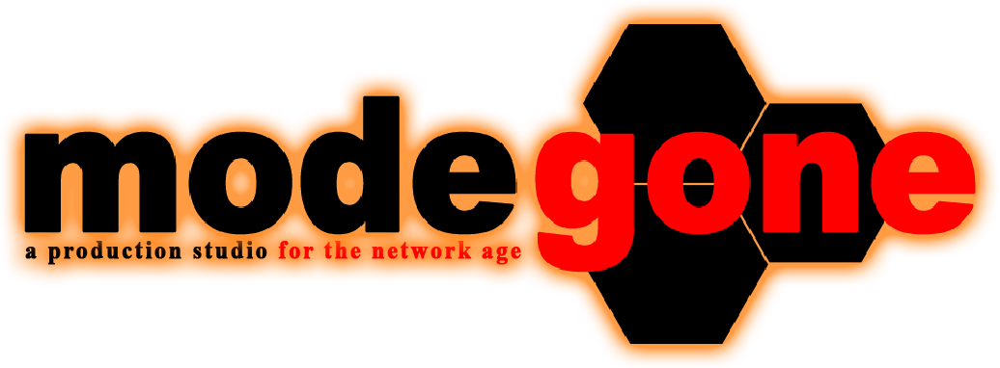

Two ambient synth/downtempo tracks written in early-mid 2022 in the UK and completed in early 2023 in Tokyo, loosely inspired by cyberpunk literature and other science fiction media.
EP of electric guitar-led ambient music accompanied by analog synthesisers and field recordings. Recorded and produced from the UK in late 2022.
Original sound design for the first game by Mode Gone. In-game UI sounds inspired by archaic computer operating systems and 90s console games.
Play Two imagined soundtracks for entries to the 2022 MY FAMICASE Exhibition, inspired by 'SHIVER' by Dan Ingram and 'S I G N A L' by Zeero. SHIVER takes cues from classic survival horror games, while S I G N A L's inspirations lie in electronic-leaning indie game scores. Created over the course of 1 month for A Game By Its Cover Jam.
> Photography and video [Instagram]
> Music criticism/content writing (2020-2023) [Portfolio]